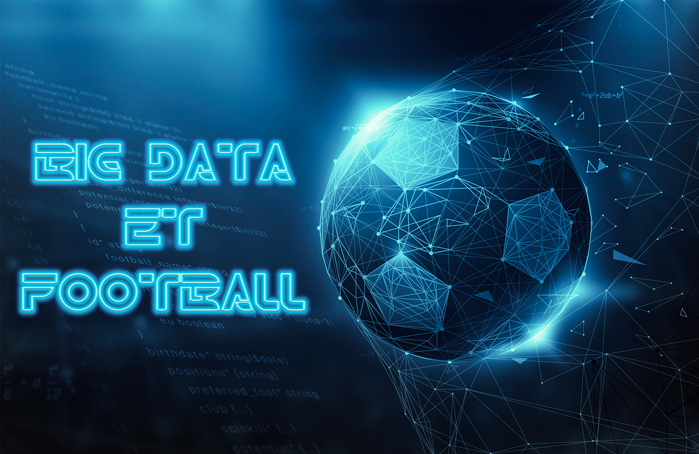

L'intégration de l'intelligence artificielle (IA) et de la data acquisition dans le domaine du football a révolutionné la
façon dont les équipes gèrent les performances, analysent les matchs, et optimisent l'entraînement. Cette convergence technologique offre des avantages significatifs,
tant pour les joueurs que pour les équipes, en exploitant les données pour prendre des décisions éclairées. Cette veille explore le fonctionnement,
les avantages, les technologies utilisées, les visions à long terme, et les sources pertinentes.
Fonctionnement et Technologies Utilisées
- Collecte de Données : L'IA et la data acquisition dans le football commencent par la collecte d’énormément de données. Des capteurs intelligents, intégrés aux équipements des joueurs et dans les stades, enregistrent des données en temps réel. Cela inclut des informations sur la vitesse, l'accélération, la fréquence cardiaque, la position sur le terrain, et d'autres métriques spécifiques au football.
- Traitement des Données : Les données collectées sont ensuite traitées par des algorithmes d'IA. Ces algorithmes identifient des schémas, des tendances, et génèrent des analyses pertinentes. Les technologies de machine learning sont souvent utilisées pour améliorer la précision des prédictions et des recommandations.
- Analyse et Prise de Décision : Les informations analysées aident les entraîneurs à prendre des décisions plus informées. Par exemple, en analysant les performances individuelles et collectives, les équipes peuvent ajuster leurs stratégies de jeu et d'entraînement pour optimiser les résultats.
Avantages de ces technologies :
- Optimisation des Performances : L'IA permet une évaluation détaillée des performances individuelles et collectives, permettant aux entraîneurs de cibler les domaines à améliorer et d'optimiser les stratégies de jeu.
- Prévention des Blessures : En surveillant les données biométriques des joueurs, les équipes peuvent anticiper et prévenir les blessures en identifiant des modèles de fatigue ou des signes précurseurs de problèmes physiques.
- Analyse des Adversaires : L'IA facilite l'analyse approfondie des performances des adversaires, permettant aux équipes de développer des stratégies spécifiques pour chaque match.
Visions à long terme :
- Personnalisation de l'Entraînement : À long terme, l'IA pourrait permettre la création d'entraînements personnalisés en fonction des besoins spécifiques de chaque joueur, accélérant ainsi leur développement.
- Intégration de la Réalité Virtuelle : L'intégration de la réalité virtuelle avec l'IA pourrait créer des simulations d'entraînement plus réalistes, aidant les joueurs à s'adapter à des situations de match complexes.
- Amélioration des Stratégies Collectives : L'évolution de l'IA pourrait conduire à des stratégies de jeu encore plus sophistiquées, exploitant pleinement le potentiel collectif de l'équipe.